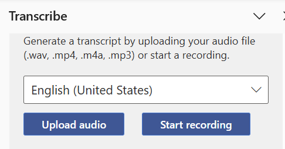

This section explains the process of generating and editing transcripts to ensure accuracy and usability. Transcripts created for and from videos can be used to create closed captions or subtitles, which can be key in making videos more accessible to all.
Transcribing audio to text can be done in different ways. The most "low-tech" method is to simply listen to the audio and type it up manually. This can be made easier by software which slows down the audio and provides convenient pause buttons. However, this is still very tedious and may prove to be unsustainable for longer sections of audio.
Another method is by using an automatically generated text-file, which can be created with various programs. However, these have varying levels of accuracy, especially if the audio is not of a single, clear speaker. Background noise, multiple speakers, or specialized terminology may reduce the accuracy of these transcripts. That’s where the important step of editing comes in.
One method of generating transcripts is to use Word's Dictate feature.
Open a new Word document.
In the Home tab, select the drop down menu under the Dictate icon.
Upload an audio file, or select Start recording.
After your recording is uploaded or recorded, Word creates a transcript with timestamps and labeled speakers.

Select Add to document and choose to include the timestamps or speakers.
Ensuring accuracy is why editing transcripts is a crucial part of accessibility. While starting with an autogenerated transcript is faster than typing it wholesale, you should still plan to spend time editing the generated transcript.
Formatting the transcript also matters and may be especially relevant if there are multiple speakers. Transcripts do not exclusively consist of the spoken word in a video.
They may also include additional descriptions or explanations, such as indicating who is speaking, sound effects, or other important information that impaired users may need to know.
To edit transcripts, you can remove filler words or repetitions.
It is helpful to keep timestamps within the transcript so you can find any specific information in a video that you might need.
Most transcripts online are provided in HTML, although there is not a set standard (you can read about how to make a transcript in Clipchamp using Word in [link to “making a transcript”] this section).
Some platforms have built-in transcript functions where you can upload yours. In general, you should make it easy for users to know that there is a transcript available and where to find it. Including the transcript or a link to it next to or under the video, or in its description, makes it easier for users to find it.